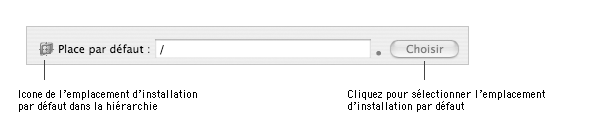
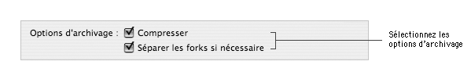
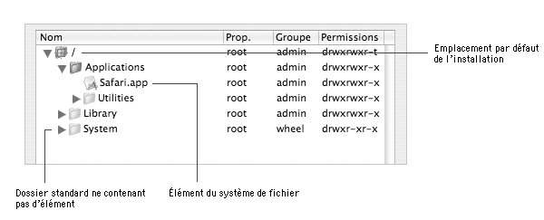
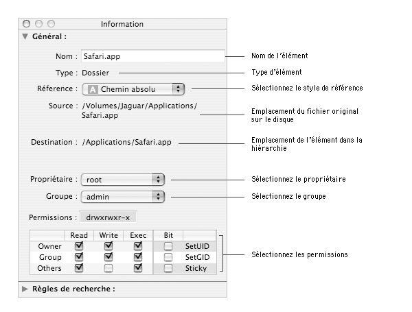
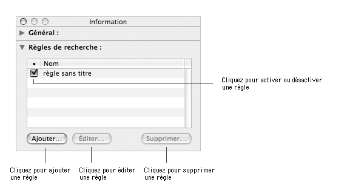
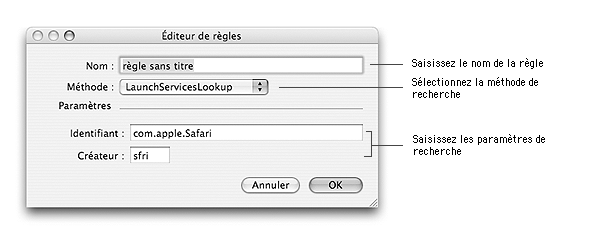

Ce document détaille comment définir l'emplacement par défaut de l'installation et la composition de la hiérarchie des fichiers et dossiers à installer ainsi que leurs propriétés.
Définition de l'emplacement par défaut de l'installationL'emplacement par défaut est à la fois l'emplacement où seront par défaut installés les éléments par le Programme d'installation et le point de départ dans la hiérarchie qu'Iceberg utilisera pour construire l'archive des éléments. L'emplacement par défaut est repérable dans la hiérarchie à son icone de dossier avec une croix de viseur rouge.

Pour définir l'emplacement par défaut de l'installation :
| 1 | Sélectionnez le package dans la colonne Packages et metapackages. |
| 2 | Choisissez Vue > Fichiers. |
| 3 | Sélectionnez dans la hiérarchie de fichiers le dossier voulu et cliquez sur Choisir. |
Lorsqu'un package est construit par Iceberg, la hiérarchie des fichiers est archivée dans un unique fichier au format cpio. Les options d'archivage vous permettent de lancer des traitements spécifiques avant et après l'archivage lui-même.
Deux options sont disponibles :
Pour activer ou désactiver des options d'archivage :
| 1 | Sélectionnez le package dans la colonne Packages et metapackages. |
| 2 | Choisissez Vue > Fichiers. |
| 2 | Sélectionnez les options d'archivage que vous souhaitez. |
La hiérarchie des fichiers qui seront installés par le package est affichée dans un panneau qui s'apparent au mode de présentation par listes du Finder. Son fonctionnement est globament identique à ce dernier et vous permet d'ajouter des éléments, renommer des dossiers, changez les propriétés des fichiers, etc.
Trois types d'éléments peuvent composer la hiérarchie :
|
Pour ajouter un dossier ou un fichier à la hiérarchie :
| 1 | Sélectionnez le package dans la colonne Packages et metapackages. | ||
| 2 | Choisissez Vue > Fichiers. | ||
| 3 | Sélectionnez le dossier où vous souhaitez insérer le nouvel élément. | ||
| 4 | Choisissez Archive > Ajouter des fichiers…. | ||
| 5 | Sélectionnez le(s) élément(s) que vous souhaitez ajouter et cliquez sur Ajouter. | ||
| 6 | Sélectionnez le style de référence
à utiliser pour le(s) élément(s).
| ||
| 7 | Cochez l'option Conserver propriétaire et groupe si vous souhaitez conserver les valeurs actuelles de ces informations. Si cette option est décochée, le propriétaire et le groupe du ou des nouveaux éléments seront ceux du dossier de destination. | ||
| 8 | Cliquez sur Ajouter. |
Pour supprimer un dossier ou un fichier de la hiérarchie :
| 1 | Sélectionnez le package dans la colonne Packages et metapackages. | ||
| 2 | Choisissez Vue > Fichiers. | ||
| 3 | Sélectionnez le(s)
élément(s) que vous souhaitez supprimer
de la hiérarchie.
| ||
| 4 | Choisissez Édition > Effacer. | ||
| 5 | Cliquez sur Supprimer.
|
Pour déplacer un dossier ou un fichier à un autre emplacement dans la hiérarchie :
| 1 | Sélectionnez le package dans la colonne Packages et metapackages. | ||
| 2 | Choisissez Vue > Fichiers. | ||
| 3 | Sélectionnez le(s) élément(s) que vous souhaitez déplacez. | ||
| 4 | Glissez-déposez la sélection à l'endroit
que vous souhaitez dans la hiérarchie.
|
Pour créer un dossier personnalisé dans la hiérarchie :
| 1 | Sélectionnez le package dans la colonne Packages et metapackages. |
| 2 | Choisissez Vue > Fichiers. |
| 3 | Sélectionnez le dossier où vous souhaitez insérer le dossier personnalisé. |
| 4 | Choisissez Archive > Nouveau dossier. |
| 5 | Saisissez le nom du dossier dans le champ d'édition et validez avec la touche Entrée. |
Pour renommer un dossier personnalisé :
| 1 | Sélectionnez le package dans la colonne Packages et metapackages. | ||
| 2 | Choisissez Vue > Fichiers. | ||
| 3 | Sélectionnez le dossier que vous souhaitez renommer.
| ||
| 4 | Double-cliquez sur la ligne sélectionnée. | ||
| 5 | Saisissez le nom du dossier dans le champ d'édition et validez avec la touche Entrée. |
Pour dévoiler le contenu d'un dossier :
| 1 | Sélectionnez le package dans la colonne Packages et metapackages. | ||
| 2 | Choisissez Vue > Fichiers. | ||
| 3 | Sélectionnez le dossier (qui fait référence à un dossier réel sur le disque) dont vous souhaitez dévoiler le contenu. | ||
| 4 | Choisissez Archive > Dévoiler > Un niveau pour révéler
le contenu du premier niveau du dossier ou Archive > Dévoiler > Complètement pour révéler tout le contenu d'un dossier.
|
En utilisant l'inspecteur de fichiers, vous pouvez changer les propriétaires, groupes et permissions des éléments dans la hiérarchie afin qu'ils correspondent à ceux que vous souhaitez leur voir attribuer lors de l'installation. Il n'est pas possible de modifier les propriétés des dossiers standards.
Important: Cela ne modifiera pas les propriétés des éléments originaux sur le disque.

Pour renommer un dossier personnalisé avec l'inspecteur :
| 1 | Sélectionnez le package dans la colonne Packages et metapackages. |
| 2 | Choisissez Vue > Fichiers. |
| 3 | Sélectionnez le dossier que vous souhaitez renommer. |
| 4 | Choisissez Vue > Lire les informations. |
| 5 | Saisissez le nom du dossier dans le champ Nom et validez avec la touche Entrée. |
Pour changer le style de référence d'un élément :
| 1 | Sélectionnez le package dans la colonne Packages et metapackages. |
| 2 | Choisissez Vue > Fichiers. |
| 3 | Sélectionnez le(s) élément(s) dont vous souhaitez modifier le style de référence. |
| 4 | Choisissez Vue > Lire les informations. |
| 5 | Sélectionnez le style de référence que vous souhaitez dans le menu local Référence. |
Pour changer le propriétaire d'un élément :
| 1 | Sélectionnez le package dans la colonne Packages et metapackages. |
| 2 | Choisissez Vue > Fichiers. |
| 3 | Sélectionnez le(s) élément(s) dont vous souhaitez modifier le propriétaire. |
| 4 | Choisissez Vue > Lire les informations. |
| 5 | Sélectionnez le propriétaire que vous souhaitez dans le menu local Propriétaire. |
Pour changer le groupe d'un élément :
| 1 | Sélectionnez le package dans la colonne Packages et metapackages. |
| 2 | Choisissez Vue > Fichiers. |
| 3 | Sélectionnez le(s) élément(s) dont vous souhaitez modifier le groupe. |
| 4 | Choisissez Vue > Lire les informations. |
| 5 | Sélectionnez le groupe que vous souhaitez dans le menu local Groupe. |
Pour changer les permissions d'un élément :
| 1 | Sélectionnez le package dans la colonne Packages et metapackages. | ||
| 2 | Choisissez Vue > Fichiers. | ||
| 3 | Sélectionnez le(s) élément(s) dont vous souhaitez modifier les permissions. | ||
| 4 | Choisissez Vue > Lire les informations. | ||
| 5 | Sélectionnez les permissions que vous souhaitez dans le tableau
Permissions.
|
Vous pouvez attacher des règles de recherche à un élément (habituellement une application ou un bundle) afin de permettre au Programme d'installation de trouver une potentielle ancienne version de l'élément sur le disque (*).
Cela permet, par exemple, dans le cas où vous installez votre application dans le dossier /Applications et que l'utilisateur ait déplacé une
ancienne version dans le dossier /Applications/Utilitaires de remplacer la version qui se trouve dans le dossier Utilitaires plutôt
que d'installer la nouvelle version dans le dossier Applications tout en conservant l'ancienne version dans Utilitaires.
Vous pouvez attacher une ou plusieurs règles à un même élément. Les règles sont évaluées du haut vers le bas. Dès qu'une règle trouve un résultat, l'évaluation est stoppée (**).
Important: Vous ne pouvez pas attacher de règles de recherche à un dossier standard.

Pour attacher une règle à un élément :
| 1 | Sélectionnez le package dans la colonne Packages et metapackages. |
| 2 | Choisissez Vue > Fichiers. |
| 3 | Sélectionnez l'élément auquel vous souhaitez attacher une règle de recherche. |
| 4 | Choisissez Vue > Lire les informations. |
| 5 | Cliquez sur le triangle à gauche de l'intitulé Règles de recherche. |
| 6 | Cliquez sur Ajouter… . |
| 7 | Configurez la règle de recherche et cliquez sur OK. |
Pour éditer une règle :
| 1 | Sélectionnez le package dans la colonne Packages et metapackages. |
| 2 | Choisissez Vue > Fichiers. |
| 3 | Sélectionnez l'élément dont vous souhaitez éditer une des règles. |
| 4 | Choisissez Vue > Lire les informations. |
| 5 | Cliquez sur le triangle à gauche de l'intitulé Règles de recherche. |
| 6 | Sélectionnez la règle que vous souhaitez éditer. |
| 7 | Cliquez sur Éditer… . |
| 8 | Éditez la règle de recherche et cliquez sur OK. |
Pour supprimer une règle :
| 1 | Sélectionnez le package dans la colonne Packages et metapackages. |
| 2 | Choisissez Vue > Fichiers. |
| 3 | Sélectionnez l'élément dont vous souhaitez supprimer une ou plusieurs règles. |
| 4 | Choisissez Vue > Lire les informations. |
| 5 | Cliquez sur le triangle à gauche de l'intitulé Règles de recherche. |
| 6 | Sélectionnez la ou les règles que vous souhaitez supprimer et cliquez sur Supprimer… . |
| 7 | Cliquez sur Supprimer. |
Pour activer ou désactiver une règle :
| 1 | Sélectionnez le package dans la colonne Packages et metapackages. |
| 2 | Choisissez Vue > Fichiers. |
| 3 | Sélectionnez l'élément dont vous souhaitez activer ou désactiver une règle. |
| 4 | Choisissez Vue > Lire les informations. |
| 5 | Cliquez sur le triangle à gauche de l'intitulé Règles de recherche. |
| 6 | Sélectionnez la règle que vous souhaitez activer ou désactiver. |
| 7 | Cliquez sur la boîte à cocher de la colonne •. |
Pour trier les règles :
| 1 | Sélectionnez le package dans la colonne Packages et metapackages. |
| 2 | Choisissez Vue > Fichiers. |
| 3 | Sélectionnez l'élément dont vous souhaitez trier les règles. |
| 4 | Choisissez Vue > Lire les informations. |
| 5 | Cliquez sur le triangle à gauche de l'intitulé Règles de recherche. |
| 6 | Sélectionnez une règle. |
| 7 | Glissez-déposez la à l'emplacement que vous souhaitez. |
Une règle de recherche est définie par trois informations : son nom, sa méthode et les paramêtres de cette méthode.
Il existe cinq types de méthodes de recherche possibles :
Pour créer une règle BundleIdentifierSearch :
| 1 | Sélectionnez le package dans la colonne Packages et metapackages. | ||
| 2 | Choisissez Vue > Fichiers. | ||
| 3 | Sélectionnez le bundle auquel vous souhaitez attacher une règle de recherche. | ||
| 4 | Choisissez Vue > Lire les informations. | ||
| 5 | Cliquez sur le triangle à gauche de l'intitulé Règles de recherche. | ||
| 6 | Cliquez sur Ajouter… . | ||
| 7 | Saisissez le nom de la règle dans le champ Nom. | ||
| 8 | Sélectionnez BundleIdentifierSearch dans le menu local Méthode. | ||
| 9 | Saisissez l'identifiant du bundle (CFBundleIdentifier) dans le champ Identifiant. | ||
| 10 | Saisissez l'emplacement de départ de la recherche dans le champ Point de départ. | ||
| 11 | Saisissez la profondeur maximale de la recherche dans le champ Profondeur max. | ||
| 12 | Définissez les dossier à ne pas parcourir lors de la recherche dans la liste Rép. exemptés. | ||
| 13 | Sélectionnez le comportement à adopter
quand la recherche aboutit dans le menu local Comportement.
| ||
| 14 | Cliquez sur OK. |
Pour créer une règle BundleVersionFilter :
| 1 | Sélectionnez le package dans la colonne Packages et metapackages. | ||
| 2 | Choisissez Vue > Fichiers. | ||
| 3 | Sélectionnez le bundle auquel vous souhaitez attacher une règle de recherche. | ||
| 4 | Choisissez Vue > Lire les informations. | ||
| 5 | Cliquez sur le triangle à gauche de l'intitulé Règles de recherche. | ||
| 6 | Cliquez sur Ajouter… . | ||
| 7 | Saisissez le nom de la règle dans le champ Nom. | ||
| 8 | Sélectionnez BundleVersionFilter dans le menu local Méthode. | ||
| 9 | Saisissez la version minimale requise dans le champ Version min. | ||
| 10 | Saisissez la version maximale requise dans le champ Version max.
| ||
| 11 | Cliquez sur OK. |
Pour créer une règle CheckPath :
| 1 | Sélectionnez le package dans la colonne Packages et metapackages. |
| 2 | Choisissez Vue > Fichiers. |
| 3 | Sélectionnez l'élément auquel vous souhaitez attacher une règle de recherche. |
| 4 | Choisissez Vue > Lire les informations. |
| 5 | Cliquez sur le triangle à gauche de l'intitulé Règles de recherche. |
| 6 | Cliquez sur Ajouter… . |
| 7 | Saisissez le nom de la règle dans le champ Nom. |
| 8 | Sélectionnez CheckPath dans le menu local Méthode. |
| 9 | Saisissez le chemin absolu à rechercher dans le champ Chemin. |
| 10 | Cliquez sur OK. |
Pour créer une règle CommonAppSearch :
| 1 | Sélectionnez le package dans la colonne Packages et metapackages. | ||
| 2 | Choisissez Vue > Fichiers. | ||
| 3 | Sélectionnez l'application à laquelle vous souhaitez attacher une règle de recherche. | ||
| 4 | Choisissez Vue > Lire les informations. | ||
| 5 | Cliquez sur le triangle à gauche de l'intitulé Règles de recherche. | ||
| 6 | Cliquez sur Ajouter… . | ||
| 7 | Saisissez le nom de la règle dans le champ Nom. | ||
| 8 | Sélectionnez CommonAppSearch dans le menu local Méthode. | ||
| 9 | Saisissez l'identifiant de l'application (CFBundleIdentifier) dans le champ Identifiant. | ||
| 10 | Saisissez l'emplacement par défaut de l'application dans
le champ Chemin par déf.
| ||
| 11 | Cliquez sur OK. |
Pour créer une règle LaunchServicesLookup :
| 1 | Sélectionnez le package dans la colonne Packages et metapackages. | ||
| 2 | Choisissez Vue > Fichiers. | ||
| 3 | Sélectionnez le bundle auquel vous souhaitez attacher une règle de recherche. | ||
| 4 | Choisissez Vue > Lire les informations. | ||
| 5 | Cliquez sur le triangle à gauche de l'intitulé Règles de recherche. | ||
| 6 | Cliquez sur Ajouter… . | ||
| 7 | Saisissez le nom de la règle dans le champ Nom. | ||
| 8 | Sélectionnez LaunchServicesLookup dans le menu local Méthode. | ||
| 9 | Saisissez l'identifiant du bundle (CFBundleIdentifier) dans le champ Identifiant. | ||
| 10 | Saisissez le type créateur du bundle (CFBundleSignature) dans
le champ Créateur.
| ||
| 11 | Cliquez sur OK. |
(*) Si vous souhaitez avoir plus d'information sur les règles de recherche, vous pouvez consulter le chapitre Finding Previously Installed Software du document Software Distribution.
(**) Il y a une exception à cette règle avec la méthode BundleIdentifierSearch quand le comportement sélectionné n'est pas findOne.